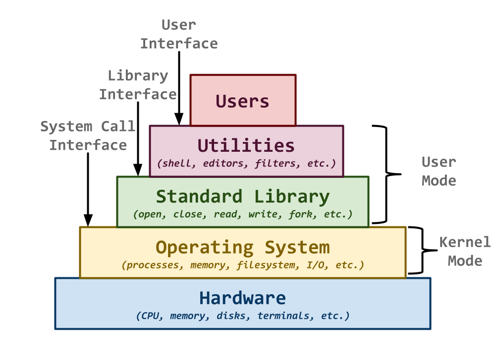

Everyone:
Next week, we will transition from high-level scripting languages such as Bourne Shell and Python to the ubiquitious C systems programming language. We shall descend down the software stack, away from user applications, and towards the lower level system calls that power our programs.
That is, rather than focusing on how to use or compose tools such as cat, grep, or sort, we will instead learn how to build these basic components, while adhering to the Unix philosophy.

TL;DR¶
The focus of this reading is to introduce you to programming the C programming language. In particular, you should become familiar with pointers, arrays, and strings.
Readings¶
The readings for this week are:
-
-
By the C, by the C, by the Beautiful C
This should be review from Fundamentals of Computing, so skim this chapter and make sure you recognize most of this material.
A Deeper Dive into C Programming
For this week, focus on sections 2.2, 2.3, 2.5, 2.8, and 2.9 (ie. pointers, arrays, strings, I/O).
For this week, focus on sections 3.1, 3.2, and 3.3 (ie. gdb and valgrind).
Again, most of this should be review from Fundamentals of Computing and Data Structures, so skim this document and make sure you understand how to write and use a Makefile.

Optional References¶
Here are some additional resources:
Compiler Flags¶
We will be using C99 version of the C programming language. This means that when you compile your programs with gcc, you should include the
-std=gnu99compiler flag:$ gcc -Wall -g -std=gnu99 -o program source.cNote: The
-Wallflags enable most warnings while the-gflags enable debugging symbols, which will come in handy when we need to use tools such as gdb and valgrind.Quiz¶
This week, the reading is split into two sections: the first part is a dredd quiz, while the second part involves two C programs:
sort.candgrep.c.To test the C program, you will need to download the Makefile and test scripts:
$ git switch master # Make sure we are in master branch $ git pull --rebase # Make sure we are up-to-date with GitHub $ git switch -c reading06 # Create reading06 branch and check it out $ cd reading06 # Go into reading06 folder # Download Reading 06 Makefile $ curl -LO https://pnutz.h4x0r.space/courses/cse.20289.sp26/static/txt/reading06/Makefile # Download, build, and execute tests $ make testQuestions¶
Given the following C program, sum.c, which computes the sum of all the integers read from standard input:
/* sum.c */ #include <stdio.h> #include <stdlib.h> /* Constants */ #define MAX_NUMBERS (1<<10) /* Functions */ size_t read_numbers(FILE *stream, int numbers[], size_t n) { size_t i = 0; while (i < n && scanf("%d", numbers[i]) != EOF) { i++; } return i; } int sum_numbers(int numbers[]) { int total = 0; for (size_t i = 0; i < sizeof(numbers); i++) { total += numbers[i]; } return total; } /* Main Execution */ int main(int argc, char *argv[]) { int numbers[MAX_NUMBERS]; int total; size_t nsize; nsize = read_numbers(stdin, numbers, MAX_NUMBERS); total = sum_numbers(numbers); printf("{}\n", total); return EXIT_SUCCESS; }And the following C program, cat.c, which implements the cat command:
/* cat.c */ #include <errno.h> #include <stdbool.h> #include <stdio.h> #include <stdlib.h> #include <string.h> /* Globals */ char * PROGRAM_NAME = NULL; /* Functions */ void usage(int status) { ____(stderr, "Usage: %s\n", PROGRAM_NAME); /* 1 */ ____(status); /* 2 */ } bool cat_stream(FILE *stream) { char buffer[BUFSIZ]; while (____(buffer, BUFSIZ, stream)) { /* 3 */ ____(buffer, stdout); /* 4 */ } return true; } /* Main Execution */ int main(int argc, char *argv[]) { int argind = 1; /* Parse command line arguments */ PROGRAM_NAME = ____; /* 5 */ while (argind < argc && ____(argv[argind]) > 1 && argv[argind][0] == '-') { /* 6 */ char *arg = argv[argind++]; switch (arg[1]) { case 'h': usage(0); break; default: usage(1); break; } } /* Process each file */ return !cat_stream(stdin); } /* vim: set sts=4 sw=4 ts=8 expandtab ft=c: */Code is not Literature¶
For these types of questions, your first instinct should be to play with the code. As a computer scientist, your approach to any new body of code is to study and investigate it by taking it apart, modifying it, breaking it, and putting it back together.
As Peter Seibel writes, code is not literature:
We don’t read code, we decode it. We examine it. A piece of code is not literature; it is a specimen ... and we are naturalists.
If you truly want to understand something, simply looking up an answer on Google or StackOverflow or ChatGPT is insufficient. For true mastery, you need to apply the principle of the Hands-On Imperative:
Hackers believe that essential lessons can be learned about the systems—about the world—from taking things apart, seeing how they work, and using this knowledge to create new and more interesting things.
TL;DR: Download the code. Compile it. Break it. Fix it. Happy Hacking.
Record the answers to the following Reading 06 Quiz questions in your
reading06branch:Programs¶
You are to write two simple C programs based on the examples above.
sort.c¶Use
sum.cas the basis for a C program calledsort.c, which uses qsort to implement a basic version of sort:$ shuf -i 1-10 | ./sort 1 2 3 4 5 6 7 8 9 10Note: You should use the provided
read_numbersfunction and simply call qsort ofnumbersand print out each element in the array.Hint: Since you will be sorting
ints, you will need a custom comparison function. To save you the trouble of searching StackOverflow or asking ChatGPT, you can use the following:int compare_ints(const void *a, const void *b) { int ia = *(const int *)a; int ib = *(const int *)b; return ia - ib; }This should be the last argument to qsort. You can also refer to the example in Beej's Guide to C Programming.
grep.c¶Use
cat.cas the basis for a C program calledgrep.c, which uses strstr to implement a basic version of grep:$ ./grep -h # Display Usage Usage: ./grep PATTERN $ ls | ./grep ep # Search stdin grep grep.c test_grep.c $ ls | ./grep NOPE ; echo $? # Exit code on failure 1Note: Use the strstr function to search for strings (you do not need to support regular expressions).
Note: Make sure you return with an non-zero exit code if the
PATTERNis not found in the input stream.Makefile¶To build your programs, you need to update the provided Makefile to include rules or recipes for the
sortandgreptargets. Be sure to use theCCandCFLAGSvariables in your rules.Once you have a working Makefile, you should be able to use the make command to run your recipes:
$ make clean # Remove targets rm -f sort grep $ make # Build targets gcc -Wall -g -std=gnu99 -o sort sort.c gcc -Wall -g -std=gnu99 -o grep grep.c $ make test # Test programs Checking reading06 sort ... sort 1 1 ... Success sort 1 10 ... Success sort 1 100 ... Success sort 1 1000 ... Success -------------------- Score 4.00 / 4.00 Grade 1.00 / 1.00 Status Success Checking reading06 grep ... grep ... Succes grep -h ... Succes grep root /etc/passwd ... Succes grep login /etc/passwd ... Succes grep asdf /etc/passwd ... Succes -------------------- Score 5.00 / 5.00 Grade 1.00 / 1.00 Status SuccessSubmission¶
To submit you work, follow the same process outlined in Reading 01:
#-------------------------------------------------- # BE SURE TO DO THE PREPARATION STEPS ABOVE #-------------------------------------------------- $ cd reading06 # Go into reading06 folder $ $EDITOR answers.json # Edit your answers.json file $ ../.scripts/check.py # Check reading06 quiz Checking reading06 quiz ... Q01 0.10 / 0.10 Q02 0.10 / 0.10 Q03 0.10 / 0.10 Q04 0.10 / 0.10 Q05 0.30 / 0.30 Q06 0.10 / 0.10 Q07 0.20 / 0.20 -------------------- Score 14.00 / 14.00 Grade 1.00 / 1.00 Status Success $ git add answers.json # Add answers.json to staging area $ git commit -m "Reading 06: Quiz" # Commit work $ $EDITOR Makefile # Edit source code $ $EDITOR sort.c # Edit source code $ $EDITOR grep.c # Edit source code $ make # Build programs $ make test # Run tests $ git add Makefile # Add Makefile to staging area $ git add sort.c grep.c # Add source code to staging area $ git commit -m "Reading 06: Code" # Commit work $ git push -u origin reading06 # Push branch to GitHubAcknowledgments¶
If you collaborated with any other students, or received help from TAs or AI tools on this assignment, please record this support in the
README.mdin thereading06folder and include it with your Pull Request.Graders¶
Once you have committed your work and pushed it to GitHub, remember to create a pull request and assign it to the appropriate teaching assistant from the Reading 06 TA List.
Note: this list changes each week, so be sure to consult the appropriate list for each assignment.
-